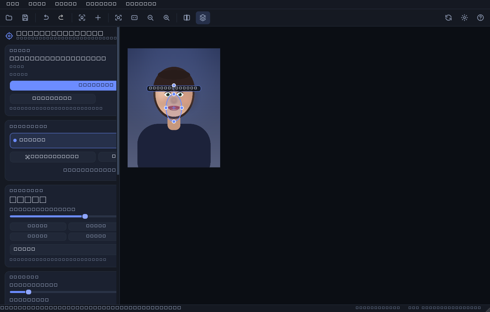
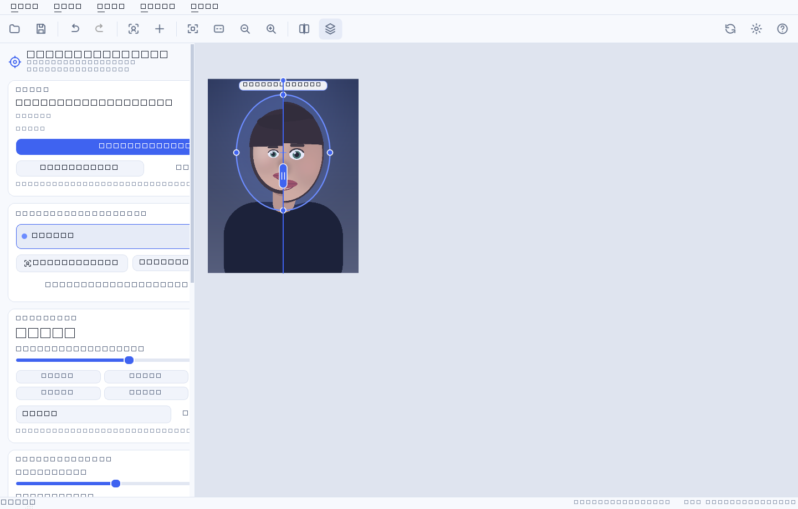
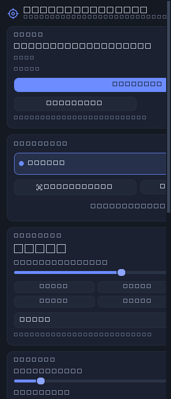
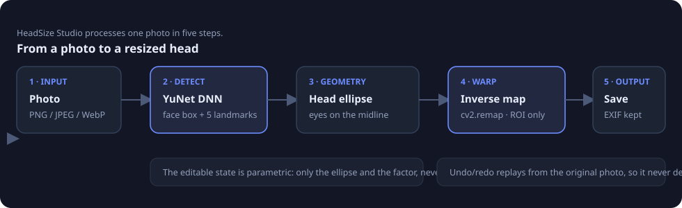
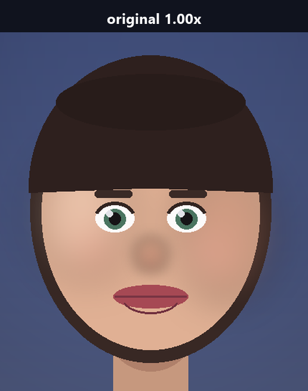
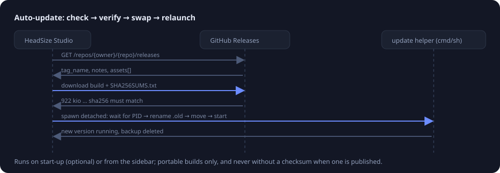

HeadSize Studio
Resize the head of anyone in a photo — with a live preview, no layers, no manual selection.

Why it exists
Making a head bigger is the oldest joke in photo editing, and it is surprisingly annoying to do well: you lasso the head, scale it, and the neck, hair and background give you away with a hard seam. HeadSize Studio does the boring part for you.
- Opens a photo, finds the faces. The YuNet neural detector locates each face and its five landmarks in about 16 ms.
- Grows or shrinks the head smoothly. A soft elliptical warp, so the hair, the neck and the background follow instead of getting cut off.
- Live preview at full speed. Sliders and drag handles update the picture while you drag, always from the untouched original.
- Multiple faces, individually controlled. Every head gets its own zone, size, tilt and visibility switch.
- Saves what you see. PNG, JPEG, WebP, TIFF or BMP with EXIF, ICC profile and DPI preserved.
- Updates itself. A portable build checks GitHub Releases, verifies the checksum, swaps itself and restarts.
- Thai and English UI, dark and light themes.
Screenshots


Install
Windows — portable build (no installer)
- Download
HeadSize-Studio-<version>-windows-x64.exefrom Releases. - Run it. Nothing is installed, nothing is written outside your user folder.
- The app checks for newer versions on start-up and can update itself in place.
From source (Windows, macOS, Linux)
git clone https://github.com/NarDecH/headsize-studio.git
cd headsize-studio
python -m venv .venv
# Windows: .venv\Scripts\activate macOS/Linux: source .venv/bin/activate
pip install -r requirements.txt
python -m headsize # the GUI
Requirements: Python 3.10+ and the packages in
requirements.txt (numpy, opencv-python-headless,
PyQt6, Pillow). The face model ships with the repository, so detection works
offline out of the box.
Command line (batch it)
python -m headsize.cli photo.jpg --scale 1.3 # every face +30 %
python -m headsize.cli photo.jpg --list-faces # what did it find?
python -m headsize.cli photo.jpg --scale 0.85 \
--region 640,420,180,240 -o small.jpg # by hand, no detection
Quick start
- Open a photo — the button in the sidebar,
Ctrl+O, or drag the file onto the window. - The app finds the faces automatically. If it found nothing, press Add a head by hand and drag the zone over the head.
- Drag the Head size slider.
1.00×is the original size;1.30×is a clearly bigger head;1.75×is a meme. - Fine-tune with the zone sliders — edge softness is the one that matters most (see below).
- Press Save a copy (
Ctrl+S). The suggestion isphoto-headsize.jpgso the original is never overwritten by accident.
The controls
| Control | What it does | Default |
|---|---|---|
| Head size | Scale of the head inside the zone. 0.30×–3.00× | 1.00× |
| Edge softness (feather) | How much of the zone is used to blend the scale back to 1.0. Small = the whole head scales rigidly and the rim is tighter; large = softer, but the head grows less than the number says. | 22 % |
| Zone width / height | Size of the elliptical influence zone. Bigger zone = more room to grow before the rim stops it. | from the face box |
| Zone tilt | Rotation of the zone, for tilted heads. Also dragged with the top handle. | from the eyes |
| Render quality | Resampling filter: fast (bilinear), balanced, high (bicubic). Fast is for dragging sliders on huge photos. | High |
| Compare | Result, Original, or Split with a draggable divider (C cycles). |
Result |
| Show the influence zone | The dashed ellipse overlay (H). |
On |
| Keep EXIF / ICC / DPI | Metadata is copied into the saved file. | On |
| Channel | Stable or Beta release channel for updates. | Stable |

Keyboard shortcuts
| Keys | Action | Keys | Action |
|---|---|---|---|
Ctrl+O |
Open | Ctrl+Z / Ctrl+Y |
Undo / redo |
Ctrl+S |
Save a copy | Ctrl+R |
Reset all edits |
Ctrl+Shift+S |
Save as… | Ctrl+D |
Detect faces |
Ctrl+N |
Add a head | Del |
Delete the selected head |
Ctrl+0 |
Fit to window | Ctrl+1 |
100 % |
Ctrl+= / Ctrl+- |
Zoom | C |
Cycle compare modes |
H |
Show/hide the zone | Ctrl+U |
Check for updates |
F1 |
Shortcuts | Ctrl+Q |
Quit |
In the canvas: wheel zooms under the cursor, drag moves the selected head, middle-drag or space-drag pans, double-click on empty space adds a head, right-click opens the zone menu, Shift while resizing keeps the zone's aspect ratio.
How it works

- The photo is decoded once and kept in memory. Nothing is ever modified in place — the edit is just a list of ellipses with scale factors.
- YuNet returns a face box plus the two eyes, the nose and the mouth corners.
- From those proportions a head ellipse is estimated (hair included), centred on the eye line and tilted with it.
- The engine builds an inverse coordinate map per zone and hands it to
cv2.remap; only the pixels inside the zone are touched. - Saving renders at full resolution from the original pixels, so the tenth preview you looked at is exactly what you get.
Here is the warp at 1:1 on the face, before and after a 1.36× enlargement — hair and skin scale together, the eyes and mouth move outward with the skull, and the background only compresses gently around the rim:


The interesting part — the maths, the measured behaviour and the alternatives that were rejected — is in research.md.
Auto-update

At start-up (and from the sidebar) the app asks GitHub for the newest release of its own repository. When a newer version exists it shows the release notes and, on request:
- downloads the build for your platform,
- verifies it against the
SHA256SUMS.txtpublished with the release, - writes a small helper script that waits for the app to exit, renames the old
build to
*.old, moves the new one in, and restarts it.
If anything fails — no network, checksum mismatch, read-only folder — nothing is replaced and the reason is shown in the sidebar. Updates apply to the portable build; running from source, the button opens the release page instead.
Point the app at your own fork with Tools → Settings or the environment
variables HEADSIZE_UPDATE_OWNER and HEADSIZE_UPDATE_REPO.
FAQ
Does it work on a photo where the face is turned sideways?
Frontal and slightly turned faces work well; a hard profile may not be detected.
Place a zone by hand in that case, or use --region on the command line.
Why does the head stop growing past about 1.5×? The zone has a fixed rim and nothing outside it moves, so the head can only grow until its outline reaches the rim. Enlarge the zone (drag the side handles) and you get more room. The maths is in research.md.
Is the original file modified?
No. Saving defaults to name-headsize.ext, and Ctrl+S only overwrites the file
you opened if you choose it in the dialog.
Is my photo uploaded anywhere? No. Detection runs locally from the bundled model. The only network traffic is the update check, which sends nothing about your images.
Where are the settings stored?
%APPDATA%\HeadSizeStudio\config.json on Windows,
~/Library/Application Support/HeadSizeStudio/ on macOS,
~/.config/HeadSizeStudio/ on Linux.
Development
pip install -r requirements-dev.txt
python -m pytest # 132 tests, GUI tests run offscreen
python -m pytest -m integration # needs HEADSIZE_TEST_IMAGE=/path/to/photo.jpg
python tools/make_doc_images.py # regenerate docs/assets
python tools/build_docs.py # markdown -> docs/*.html
python tools/build_exe.py # PyInstaller portable build
The repository layout and the invariants an agent must preserve are documented in AGENT.md.
Credits and licence
- HeadSize Studio — MIT (LICENSE).
- YuNet face detection model, © Shiqi Yu, MIT licence — bundled in
headsize/assets/modelswith its licence text. All attributions are in THIRD-PARTY-NOTICES.md. - Built with PyQt6, OpenCV, NumPy and Pillow.
- Every screenshot and illustration in this documentation is generated by
tools/make_doc_images.py, so no third-party photograph is redistributed.